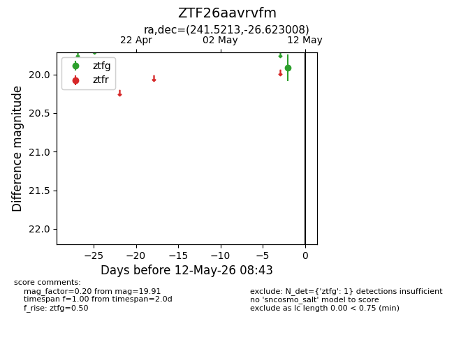
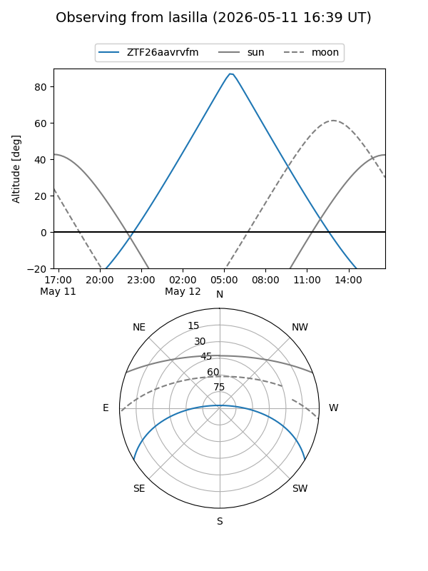
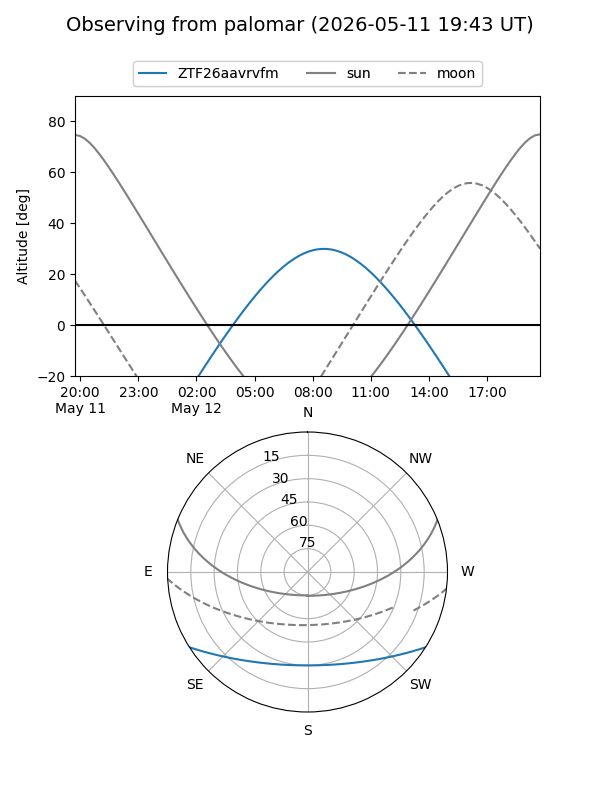

ZTF26aavrvfm
Target ZTF26aavrvfm at 2026-05-12 08:45
Aliases and brokers:
FINK: link
Lasair: link
ALeRCE: link
alt names
ZTF26aavrvfm (ztf,fink_ztf)
Coordinates:
equatorial (ra, dec) = 241.5213,-26.62301
equatorial (HMS+DMS) = 16:06:05.10,-26:37:22.83
galactic (l, b) = (348.0668,+18.73423)
Flags:
Photometry:
last ztfg=19.91
1 ztfg detections
Lightcurve

Visibility


Additional plots